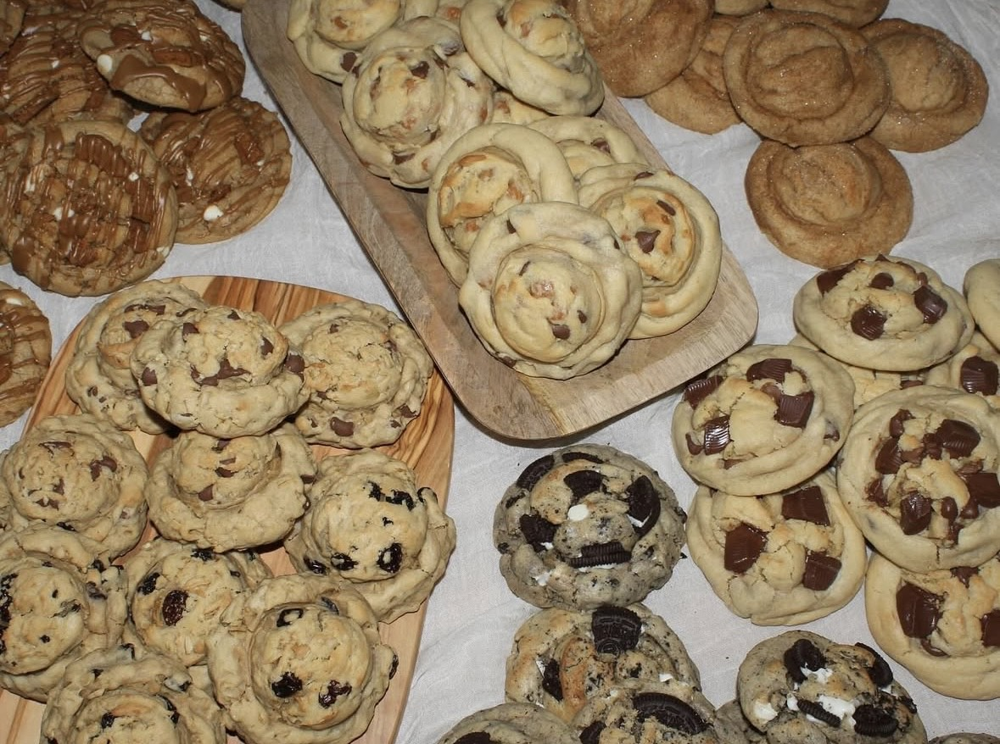

About Afters by Kali
Afters by Kali is a small batch bakery dedicated to crafting nostalgic, homemade-style cookies. Every cookie is made with care, quality ingredients, and a touch of vintage charm. Whether you're grabbing a dozen for yourself or gifting to a friend, Afters by Kali delivers sweet moments in every bite.
